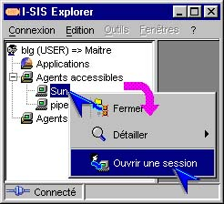
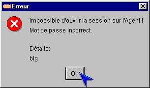
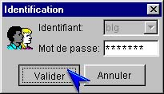
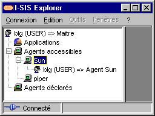

I-SIS Explorer

Guide d'utilisation
|
|
I-SIS Explorer |
|
|
Guide d'utilisation |
||
Dans le système d'information des services, il existe des I-SIS Agents et des services requérant une authentification pour vérifier vos droits d'accès. Sur les nœuds lignes de ces objets, il faut alors exécuter une méthode d'ouverture de session et s'identifier pour poursuivre l'exploration.
Pointez un I-SIS Agent ou un service accessible,
Cliquez avec le bouton droit de la souris pour afficher le menu contextuel,
Cliquez une méthode d'ouverture de session (identifiable grâce à l'icône ou ) avec le bouton gauche de la souris,

Si vous avez le même mot de passe pour le I-SIS Portail et le I-SIS Agent (service), ou que vous avez déjà accédé à cet I-SIS Agent, vous y accédez automatiquement. Sinon, un message d'erreur annonce que votre mot de passe est incorrect. Vous devez alors suivre les trois étapes suivantes:

Validez le message. Une fenêtre d'identification apparaît avec votre identifiant figé en grisé, ainsi que le mot de passe utilisé pour la connexion avec le I-SIS Portail,
Modifiez le mot de passe pour accéder au I-SIS Agent (service),

Cliquez le bouton "Valider" de la fenêtre d'identification. Le mot de passe sera mémorisé dans le I-SIS Explorer, et ne vous sera plus demandé tant que celui-ci n'aura pas été fermé,
L'accession réussie dans les deux cas, une icône d'accès et votre rôle sur le I-SIS Agent (service) accédé s'affichent dans l'arbre d'exploration, comme pour la connexion au I-SIS Portail (cf. «Connexion de I-SIS Explorer au I-SIS Portail»). Vous pouvez poursuivre l'exploration.

Copyright © 2003 BV Associates. Tous droits réservés.